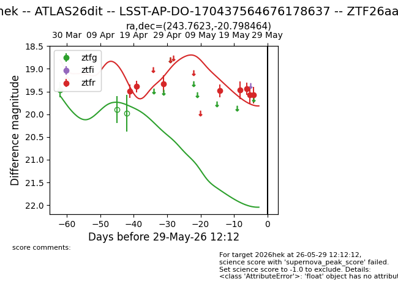
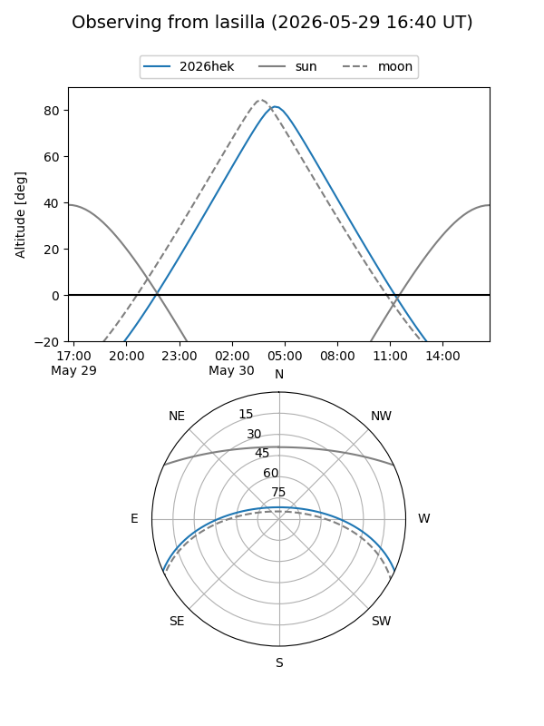
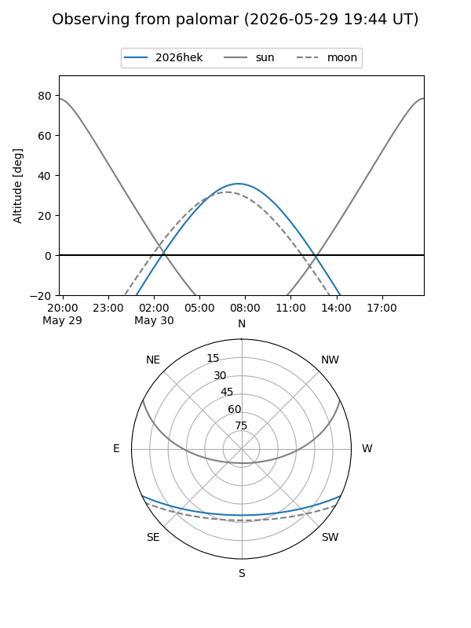
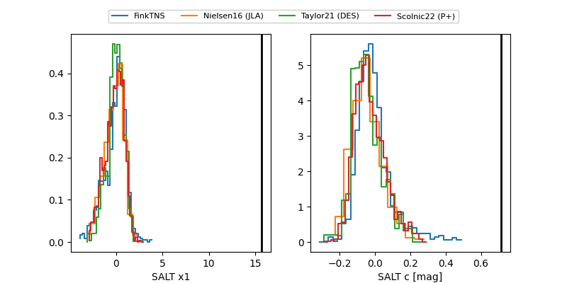

2026hek
Target 2026hek at 2026-05-29 12:16
Aliases and brokers:
lsst-FINK: link
lsst-Lasair: link
lsst-ALeRCE: link
ztf-FINK: link
ztf-Lasair: link
ztf-ALeRCE: link
TNS: link
YSE: link
alt names
ZTF26aaqnzrz (ztf,fink_ztf)
2026hek (tns,yse)
ATLAS26dit (atlas)
LSST-AP-DO-170437564676178637 (lsst)
Coordinates:
equatorial (ra, dec) = 243.7623,-20.79846
equatorial (HMS+DMS) = 16:15:02.96,-20:47:54.47
galactic (l, b) = (354.0591,+21.27063)
Flags:
TNS confirmed: nan
Photometry:
last ztfg=19.46, ztfr=19.58
1 ztfg, 9 ztfr detections
Lightcurve

Visibility


Additional plots
